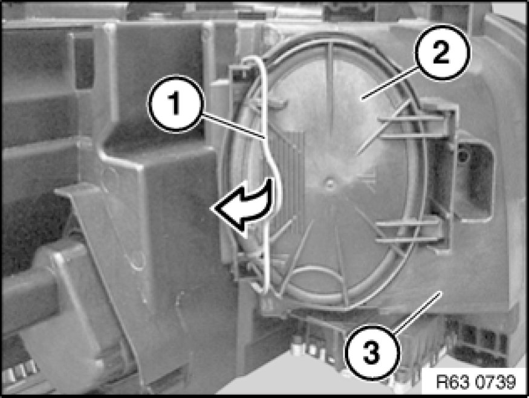
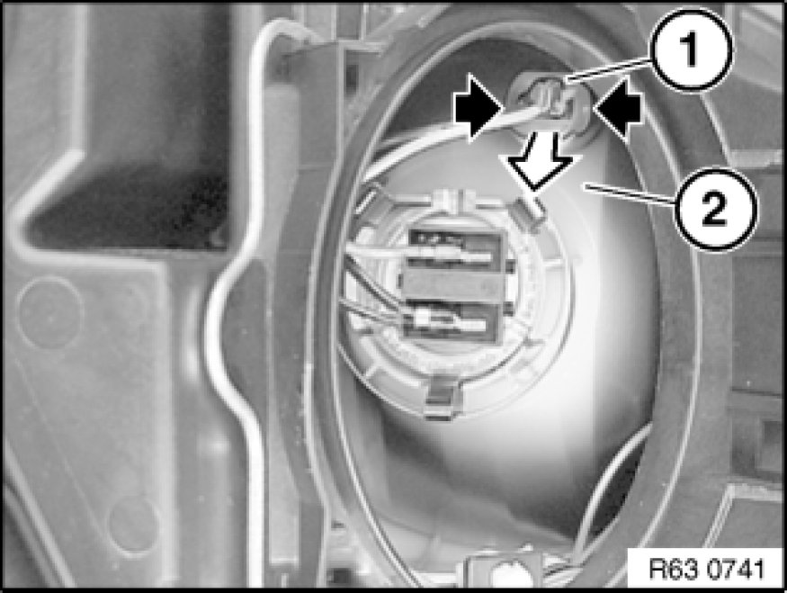
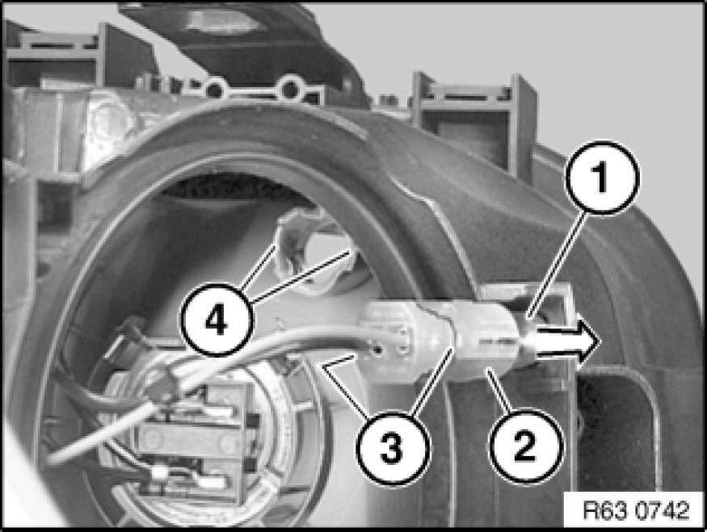

Replacing Bulb for Side Light, Front Left
63 99 140 - Replacing bulb for side light, front left

Warning!
Version with xenon headlights: Danger to life due to high voltage! Therefore, before removing, disconnect all components from the power supply (lighting system and ignition off).
Work on the entire xenon lighting system (control unit, ignition unit with bulb) may only be carried out by specialist personnel.
Follow instructions for handling light bulbs (exterior lights) Instructions for Handling Light Bulbs (Exterior Lights).

Necessary preliminary tasks:
- M54:
Partially remove intake filter housing

N52K USA:
Replace bulb for turn indicator, front left Replacing Bulb for Turn Indicator, Front Left

Note:
Headlight (3) removed for purposes of clarity.
Unlock clip (1) in direction of arrow.
Remove cover (2) from headlight (3).

Grip bulb holder (1) on both sides and pull towards rear out of headlight (2).

Pull bulb for side light (1) in direction of arrow out of bulb holder (2) and remove.
Installation Note:
Make sure guides (3) are exactly seated in mountings (4).
Note type of bulb Specifications.